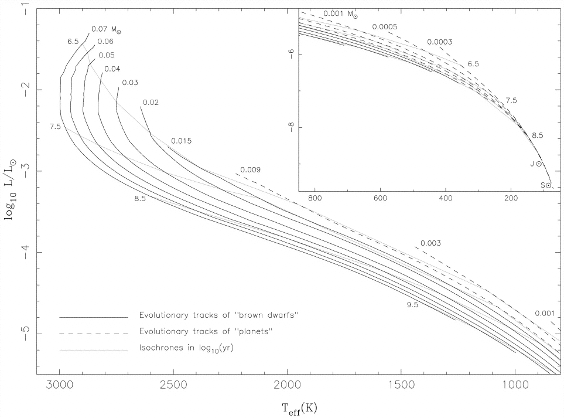
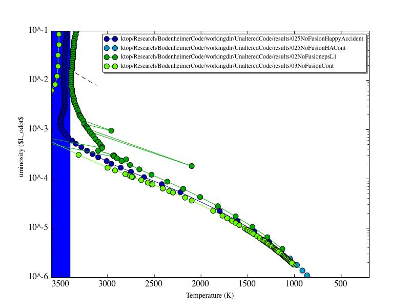
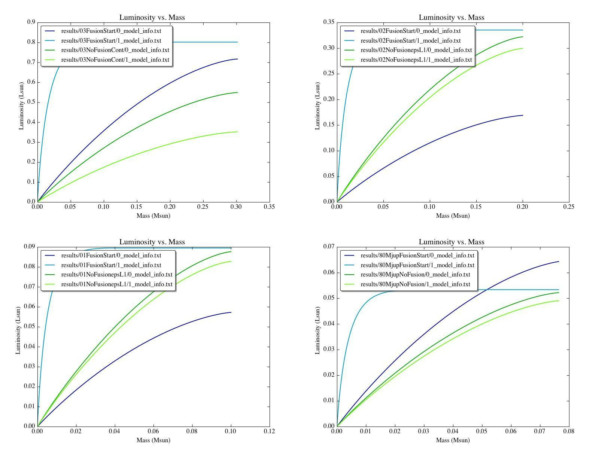

Date
& Time: April 26, 2012
Location:
Home
Computing
context: Macho Mac:
/Desktop/Research/BodenheimerCode/workingdir/UnalteredCode/
Today's
paper:
Scripts/Software
created today:
Useful
computer stuff figured out today:
Continuing
from last time:

Figure
0.1:
Low mass stellar
mass-radius relation taken from "Mass-radius relation of low
and very low-mass stars revisited with the VLTI" Authors:
Demory, B.-O.; Ségransan, D.; Forveille, T.; Queloz, D.; Beuzit,
J.-L.; Delfosse, X.; di Folco, E.; Kervella, P.; Le Bouquin, J.-B.;
Perrier, C.; Benisty, M.; Duvert, G.; Hofmann, K.-H.; Lopez, B.;
Petrov, R. Astronomy and Astrophysics, Volume 505, Issue 1, 2009,
pp.205-215
Link to the arXiv
article: http://arxiv.org/abs/0906.0602
Link to the ADS
entry: http://adsabs.harvard.edu/abs/2009A%26A...505..205D
It's
important to remind myself that the reason for figuring out what's
going on with this particular case is that I need to be confident
that once I feed TheCode.f a jupiter-mass and -luminosity input
model, it won't crash or go off the rails and produce a physically
un-possible result. To that end, I should also make sure to run a
0.1Msun model through TheCode.f in more detail and see what's been
causing that case to crash. Is it a luminosity lower-limit thing? Is
it something to do with TheCode.f not being able to successfully
invert a Henyey matrix containing a wide dynamic range of values?
This is the heart of what I need to figure out, here.
(From
last time:)
A 1Msun no-fusion
evolution with the epsL parameter decreased (and ITMX increased)
Name of this run:
1NoFusionepsL1
Exits on timestep
#649 with: "ITERATION 467 NEW VALUES: 653 9.87E+17 516
5.62E+07 442 -1.49E+38 229 3.04E+07 ERROR EXIT IN SUBROUTINE GIRL"
A 0.1Msun no-fusion
evolution with the epsL parameter decreased (and ITMX increased)
Name of this run:
01NoFusionepsL1
Exits on timestep
#569 with: " ITERATION 487 NEW VALUES: 392 2.78E+18 300
7.67E+06 14 8.30E+34 555 1.04E+06 ERROR EXIT IN SUBROUTINE GIRL"
To
Do Today:
Science:
Find
a source/citation with
the brown dwarf evolutionary
track(s)
The
following figures and data are taken from:
"A
nongray theory of extrasolar giant planets and brown dwarfs"
Burrows,
Marley, Hubbard, Lunine, Guillot, Saumon, Freedman, Sudarsky,
Sharp
ApJ,
491: 856-875, 1997 December 20

Figure
1: From Burrows et al. 1997


Figure
2: My successful cooling results, compared to the Burrows et al.
1997 results for somewhat lower mass systems. Overall, it looks
like they agree well with each other.
Table
1
Table
2
Table
3
Table
4
plot
those evolutionary tracks on my HR evolution diagrams
try
to extrapolate them up the HR diagram to the region of parameter
space occupied by these no-fusion models I've been running
...and
see how well the two do or don't match up, and if the latter, why.
According
to the Burrows paper (from which these figures and tables above are
taken) the upper mass limit for brown dwarfs is ~0.07Msun. I think
it'd be a good idea to try to run a system of that mass thru
TheCode.f to see if it can handle it...
From
the HR-diagram evolutionary tracks in Figure 2, it looks like it
might be a good idea to start my own lower-mass runs with lower
surface temperatures (around, say ~2900 or 2800K, rather then the 3e3
K I have been using until now). I'm going to start this attempt with
a system that I've already gotten to work with a higher starting
surface temperature: 0.2 Msun system.
Name
of this run: polytr2800K02.inp, 02Msun2800KFusionStart,
02NoFusion2800K
Result:
stops on timestep 577 with : "MODEL: 577 TIME: 2.8874D+16
DTIME: 1.5431D+08 NET CHANGE: 6.16D-04"
Let's
compare the results of this run with the successful results of the
02NoFusion run, and see how they differ. (I looked at the plots, and
they don't differ, really, until the 2800K case just... stops, and
the other one continues on.)
Figure
3: A comparison of the 2800K and 3000K initial surface temperature
polytropic models and their evolutions. As this figure shows, that
single timestep run through the code *with* fusion turned on
completely negates the effects of changing the polytrope's surface
temperature-- on the systems' respective luminosity profiles, at
least.

Figure
4: A comparison of how the luminosity profiles of the two 0.2Msun
systems that fail to complete all 900 timesteps go off the rails.
The general progression is the same in both, though the overall
luminosity and the mass at which the profile inflection develops do
differ. Also, it looks like the 2800K case develops a negative
luminosity on the final profile (??!).
I
think one of the following is causing the wonky luminosity profiles
in Figure 4 to develop:
The luminosity is
being allowed to change too much between iterations and/or models.
It might be worth trying these runs again with more stringent SMAX
(luminosity) constraints in place.
Something about the
small Crad parameter is screwing up the luminosity
The outer
temperature boundary conditions for the lower surface of the
atmosphere are too high, causing the outer point of the internal
luminosity profile to have to do this weird spiky thing...
I need to
plot the evolution of the atmospheric profiles for these models as
they're going off the rails, to get a better idea of what's
happening.
Did it, and can't see anything unusual or interesting going on in
their atmospheres, though it's possible that there is something
wonky going on there that I'm failing to recognize.

Figure
5: Radius vs. surface temperature plot from Burrows et al 1997.
I'm
starting to think that it's either a luminosity or surface
temperature limit that's causing these simulations to crash, rather
than a lower mass limit... I think perhaps I should go ahead and set
up a 0.07 Msun (~73 Mjup) polytropic model, and try to evolve it
forward in time and see what happens.
Name
of this run: 73Mjup{Start/polyout/NoFusion}
I
can't get the initial with-fusion step to converge, despite tweaking
the input parameters. I think fusion (even of deuterium) may be
impossible in the n=3/2 polytropic input profile, and that this
prevents the initial luminosity profile from being able to find its
more 'natural' and converge-able shape.
The
next two things to try here would be:
Figure
6: Summary of results from the 80MjupNoFusion run. The plots in the
left column include results from other runs for comparison.
Take
one of the 'with fusion' luminosity profiles from another converged
model, scale it down to the 73Mjup case, and use that as part of
the initial model for TheCode, rather than the n=3/2 polytrope
model that's currently failing.
See
Figure 7 (below) for a comparison of how the internal luminosity
profiles vary from n=3/2 polytropic inputs --> after 1 timestep
of fusion --> first two no-fusion steps
Will
need to figure out the whole 'polyout' format... again. And then
build something that conforms to it... again. (Ugh.)

Figure
7: To prepare for the 'just start the no-fusion runs with a
fusion-shaped luminosity profile' attempt, I've compared how the
magnitude and shape of the internal luminosity profiles for several
low-mass systems change throughout the polytrope --> with fusion
--> without fusion process. It looks like the profile shapes
always evolve in the same way. The change in overall luminosity
from the polytropic input model to the first with-fusion step does
vary from case to case, though. I'm not sure how much the no-fusion
part of the run depends on the *shape* of the luminosity profile,
vs. how strongly it depends on the *magnitude* of that profile.
Look
into adding the atmospheric calculations that are in TheCode.f here
into my C++ code. Go over the section on the atmos. outer boundary
conds. in the chapter from Peter's book. Note: you should have a
scanned copy of that somewhere in one of your emails. Find it and
download it onto this machine. (Can also annotate that pdf on this
local machine, too...)
Computing
Housekeeping & Miscellanea:
Write
a little shell script (or python script?) to do the scp backups from
this machine to the campus servers automatically
And
then really, really: back up the contents of this machine to the
campus server.
Backup is running now. I'll leave it to finish overnight.
Download
my own C++ code from the campus server
Create
the proper directory structure for that on this machine
Test
that my code will at least compile (and hopefully, also run) on
this machine
Administrivia:
Email
potential committee members about sitting on my qual
Find
three potential dates and times
Email
Greg to confirm he'll be in town during those times
Find
the email addresses for the rest of the people I'm asking
Email
them.
Collect
the responses, and use them to figure out when my qual should be
Fill
out the purchase order form
Go
on Amazon and get prices/quotes for the equipment I need:
Replacement
laptop battery
A
lock for the laptop
A
1-Terabyte external hard drive
Print
out the Amazon listings I find for the equipments and staple it to
the PO.
Upload
my group meeting presentation and advisor meeting notes to the
wordpress blog
Next steps:
Take
one of the 'with fusion' luminosity profiles from another converged
model, scale it down to the 73Mjup case, and use that as part of
the initial model for TheCode, rather than the n=3/2 polytrope
model that's currently failing.
See
Figure 7 for a comparison of how the internal luminosity profiles
vary from n=3/2 polytropic inputs --> after 1 timestep of
fusion --> first two no-fusion steps
Will
need to figure out the whole 'polyout' format... again. And then
build something that conforms to it... again.
Think
about how to start a mass chain-down within TheCode itself
Take
a converged with-fusion model
Run
it through a couple of no-fusion timesteps
Scale
down its mass, run it through another few no-fusion evolutions,
see if it manages to converge.
Figure
out why all of my simulations (below a certain mass, at least) fail
to converge once they start hitting that slight 'elbow' in their HR
diagram evolution.
Look
into adding the atmospheric calculations that are in TheCode.f here
into my C++ code. Go over the section on the atmos. outer boundary
conds. in the chapter from Peter's book. Note: you should have a
scanned copy of that somewhere in one of your emails. Find it and
download it onto this machine. (Can also annotate that pdf on this
local machine, too...)